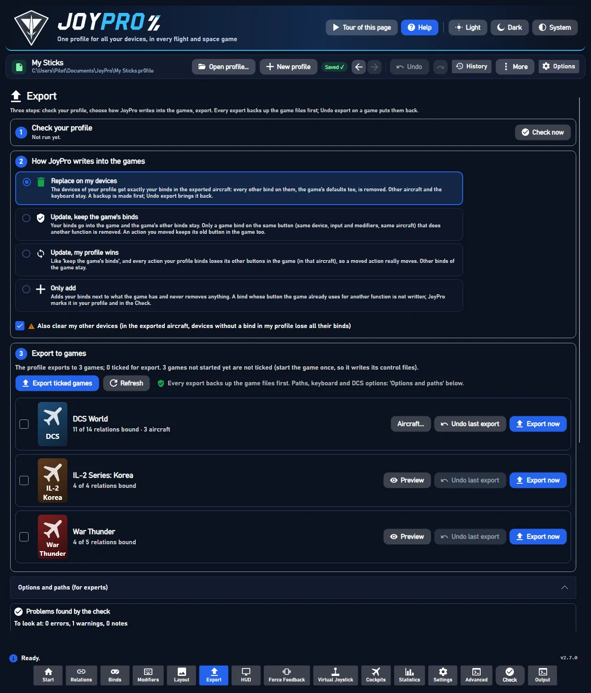

Ο Έλεγχος εξετάζει το προφίλ σας όπως θα το δει το παιχνίδι μετά από μια εξαγωγή και παραθέτει τι θα πήγαινε στραβά εκεί: ένα κουμπί που κάνει δύο πράγματα στο ίδιο αεροσκάφος, μια εντολή που καταλήγει σε δύο κουμπιά, μια αντιστοίχιση που δεν πέρασε στο παιχνίδι. Κάθε κάρτα το λέει με τα λόγια του παιχνιδιού (το αεροσκάφος, «συσκευή · κουμπί», η εντολή όπως την ονομάζει το παιχνίδι) και προσφέρει μια διόρθωση που μπορείτε να αναιρέσετε.
flowchart LR A["Έλεγχος<br/>(κάτω γραμμή ή<br/>Έλεγχος τώρα)"] --> B["Κάρτες:<br/>σφάλματα, προειδοποιήσεις,<br/>σημειώσεις"] B --> C["Ανά κάρτα: μια διόρθωση,<br/>άνοιγμα της σχέσης<br/>ή Παράβλεψη"]
#Εκτέλεση του Ελέγχου
Πατήστε Έλεγχος στην κάτω γραμμή (ή Έλεγχος τώρα στη σελίδα Εξαγωγή). Τα αποτελέσματα εμφανίζονται στη σελίδα Εξαγωγή στο Προβλήματα που βρήκε ο έλεγχος: «Για έλεγχο: 0 σφάλματα, 1 προειδοποίηση, 0 σημειώσεις».



Οι κόκκινες κάρτες είναι σφάλματα: διορθώστε τα πριν κάνετε εξαγωγή, αλλιώς το παιχνίδι θα κάνει κάτι που δεν θέλατε. Οι πορτοκαλί κάρτες είναι προειδοποιήσεις: αξίζει μια ματιά, συχνά είναι εντάξει. Οι Σημειώσεις είναι αβλαβείς.
#Ανάγνωση μιας κάρτας
- Ο τίτλος λέει τι δεν πάει καλά: «Ένα κουμπί κάνει δύο πράγματα», «Ίδια εντολή σε δύο κουμπιά», «Δεν γράφτηκε στο DCS World».
- Τα κουμπιά: «Throttle - HOTAS Warthog · BTN 22 ('Gear Up/Down')», η συσκευή, το κουμπί και, σε παρένθεση, η σχέση σας.
- Μία πρόταση για το τι συμβαίνει στο παιχνίδι: «Στο F-16C, και τα δύο κουμπιά κάνουν 'Display Management Switch - Down'. Συνήθως χρειάζεται μόνο το ένα από αυτά.»
- Οι διορθώσεις: το μπλε κουμπί με το τικ είναι η πρόταση του JoyPro. Τα άλλα είναι εναλλακτικές· το Περισσότερα έχει τις υπόλοιπες. Το Άνοιγμα '
' δείχνει τη σχέση με σημειωμένες ακριβώς τις εντολές της κάρτας· το Πίσω (Alt+Left) επιστρέφει στην κάρτα.
Κάθε διόρθωση μπορεί να αναιρεθεί με Ctrl+Z.
#Ενότητες και διορθώσεις
Πρώτα έρχονται τα σφάλματα, μετά οι προειδοποιήσεις, μετά οι σημειώσεις. Η αναζήτηση βρίσκει κάρτες ανά σχέση, αεροσκάφος, κουμπί και εντολή· το φίλτρο είδους δείχνει ένα είδος· η ταξινόμηση (Ανά σχέση, Ανά αεροσκάφος, Ανά παιχνίδι, Ανά βεβαιότητα) ομαδοποιεί επίσης τις κάρτες.
| Ενότητα | Είδος | Τι σημαίνει στο παιχνίδι | Διορθώσεις |
|---|---|---|---|
| Ένα κουμπί κάνει δύο πράγματα | σφάλμα | Μια είσοδος είναι αντιστοιχισμένη σε δύο σχέσεις που έχουν και οι δύο ενεργή μια εντολή του ίδιου αεροσκάφους: ένα πάτημα εκτελεί και τις δύο. | Μόνο 'X' σε αυτό το κουμπί (το αεροσκάφος απενεργοποιείται στις άλλες σχέσεις), Παράβλεψη· Περισσότερα: Μετακίνηση του 'X' σε άλλο κουμπί, Απενεργοποίηση όλων |
| Ένα κουμπί εκτελεί δύο εντολές | σφάλμα | Μια σχέση έχει ενεργές δύο εντολές του ίδιου αεροσκάφους (ή παιχνιδιού). | Μόνο 'A', Παράβλεψη· Περισσότερα: Μετακίνηση μίας σε άλλο κουμπί, Απενεργοποίηση όλων |
| Άλλα σφάλματα | σφάλμα | Για παράδειγμα ένα κουμπί τροποποιητή που είναι και κανονικό κουμπί. | όπως λέει η κάρτα |
| Ίδια εντολή σε δύο κουμπιά | προειδοποίηση | Μια εντολή ενός αεροσκάφους είναι ενεργή σε δύο σχέσεις: το παιχνίδι τη λαμβάνει σε δύο κουμπιά. | Διατήρηση μόνο στο X (πρόταση του JoyPro), Παράβλεψη· Περισσότερα: Απενεργοποίηση και στα δύο κουμπιά |
| Αντιγραμμένες σχέσεις | προειδοποίηση | Μια εισαγωγή δημιούργησε αντίγραφα μιας σχέσης στο ίδιο κουμπί. | Συγχώνευση σε μία· Συγχώνευση όλων των αντιγραμμένων σχέσεων |
| Δεν γράφτηκε στο παιχνίδι | προειδοποίηση | Το «Μόνο προσθήκη» άφησε έξω μια αντιστοίχιση επειδή το παιχνίδι χρησιμοποιεί το κουμπί για κάτι άλλο, ή επειδή το παιχνίδι δεν έχει ελεύθερη θέση (Elite: Primary και Secondary σε χρήση). | Εξαγωγή με 'Ενημέρωση' για αντικατάσταση, Μετακίνηση σε άλλο κουμπί, Να μείνει ως έχει |
| Σημειώσεις | σημείωση | Ακίνδυνο, αξίζει μια ματιά. |
- Η Παράβλεψη κρατά τις αντιστοιχίσεις όπως είναι και κρύβει την κάρτα (αποθηκεύεται στο προφίλ, ένα Ctrl+Z). Επιστρέφει μόνη της, με τη σήμανση Νέο και «Εμφανίζεται ξανά: τώρα και στο ...», όταν η εντολή καταλήξει σε ένα ακόμα κουμπί (μία ακόμα σχέση στο κουμπί, μία ακόμα εντολή στη σχέση). Οι Παραβλεφθείσες προειδοποιήσεις (n) εμφανίζουν τις κρυμμένες με Εμφάνιση ξανά και Εμφάνιση όλων ξανά.
- Αιτία: όταν το ιστορικό του προφίλ γνωρίζει ποια αλλαγή έφερε ένα πρόβλημα, η κάρτα το λέει («Αιτία: Manage with AI (366 αλλαγές σχέσεων) στις 21.10.2026»).
- Άγνωστες εντολές: μια εντολή που η τρέχουσα λίστα του αεροσκάφους δεν έχει πια (μια παλιά έκδοση module, ένα mod που δεν είναι εγκατεστημένο) σημειώνεται «άγνωστη εντολή»· το Περισσότερα προσφέρει Αφαίρεση της άγνωστης εντολής και Εύρεση παρόμοιων.
- Κατηγορίες οχημάτων: σε παιχνίδια χωρίς λίστες αεροσκαφών (War Thunder, MSFS, Arma) το throttle ενός αεροπλάνου και το collective ενός ελικοπτέρου στον ίδιο άξονα δεν είναι σφάλμα· συγκρούονται μόνο ενέργειες της ίδιας κατηγορίας οχημάτων.
- Ένα κουμπί κάνει δύο πράγματα: σε εκείνο το αεροσκάφος, ένα πάτημα εκτελεί και τις δύο εντολές (για παράδειγμα «Gear» και «Weapon release»). Μετά τη διόρθωση, το κουμπί κάνει ένα πράγμα εκεί· τα άλλα αεροσκάφη δεν αλλάζουν.
- Ίδια εντολή σε δύο κουμπιά: και τα δύο κουμπιά κάνουν το ίδιο σε εκείνο το αεροσκάφος. Αβλαβές, εκτός αν θέλατε το δεύτερο κουμπί για κάτι άλλο.
- Δεν γράφτηκε στο παιχνίδι: το παιχνίδι εκτελεί ακόμη τη δική του λειτουργία σε εκείνο το κουμπί. Το «Εξαγωγή με 'Ενημέρωση'» την αντικαθιστά στην επόμενη εξαγωγή· το «Να μείνει ως έχει» αφήνει τη λειτουργία του παιχνιδιού και κρύβει την κάρτα.
- Άγνωστη εντολή: το παιχνίδι θα αγνοούσε αυτή τη γραμμή· η αφαίρεσή της δεν αλλάζει τίποτα στο παιχνίδι.
#Πώς λειτουργεί εσωτερικά
- GUI: το
ValidateProfileCommand(κάτω γραμμή Έλεγχος, σελίδα Εξαγωγή Έλεγχος τώρα) εκτελεί τοengine profile validate --fail-on-warnings false, μετά τις αναφορές διπλοτύπων και συγκρούσεων, και φτιάχνει τις κάρτες (MainWindowViewModel.CheckCards.cs,MainWindowViewModel.Duplicates.cs,Models/CheckIssueModels.cs,Views/Controls/CheckProblemsPanel.axaml). Οι κάρτες εμφανίζονται σε σελίδες (5 πλήρεις, 25 απλές ανά ενότητα, Εμφάνιση περισσότερων), και το «Περισσότερα» και οι λεπτομέρειες δημιουργούνται μόνο όταν ανοίξουν, ώστε 3000 σφάλματα να μένουν αποκρίσιμα (CheckResponsivenessTests: κάθε βήμα κάτω από 400 ms). - Μηχανή: το
relations conflicts(engine\EngineCheckConflicts.cs) δίνει αναλυτικά τα δύο σφάλματα του validate:InputConflicts(κλειδίgame:plane§device§input[§modifier]) καιActionConflicts(κλειδίgame|plane|relation). Διορθώσεις:--keep <relation>,--keep-action <id>,--off,--ignore(αποθηκεύεται στοPr0file.KeptDuplicates·--list-kept,--forget-kept [--keys]),--remove-actions. Τοrelations duplicatesβρίσκει την ίδια εντολή σε δύο κουμπιά και αντίγραφα· τοexport-marks listτις αντιστοιχίσεις που άφησε έξω μια εξαγωγή. Κάθε διόρθωση είναι μία έκδοση προφίλ (ένα βήμα αναίρεσης). - Έλεγχος κειμένου: το
CheckTextGateαποτυγχάνει ένα τεστ όταν ένα κείμενο κάρτας δείχνει ένα id, «node» ή άλλη εσωτερική λέξη.
Εντολές μηχανής: engine profile validate, engine relations conflicts, engine relations duplicates, engine export-marks list, engine export-marks dismiss. Αναφορά: Ο Έλεγχος (αναφορά).
#Σχετικά
- Η σελίδα Έλεγχος, κάθε στοιχείο της
- Εξαγωγή, όπου ο Έλεγχος είναι το βήμα 1
- Δημιουργία σχέσεων